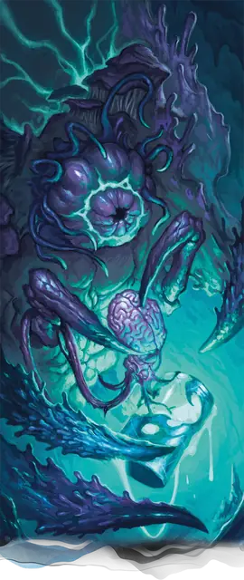

Ми-го
Mi-Go
Средняя Аберрация, Нейтральная Злая

Класс Защиты 16 Инициатива +6 (16)
Хиты 120 (16к8 + 48)
Скорость 30 футов, Полёта 30 футов
| мод | спас | ||
|---|---|---|---|
| СИЛ | 20 | +5 | +5 |
| ЛОВ | 15 | +2 | +6 |
| ТЕЛ | 16 | +3 | +3 |
| мод | спас | ||
|---|---|---|---|
| ИНТ | 21 | +5 | +9 |
| МДР | 15 | +2 | +6 |
| ХАР | 12 | +1 | +1 |
Сопротивление урону Кислота, Электричество
Иммунитеты Испуганный, Очарованный
Чувства пассивное Восприятие 16, Истинное зрение 120 футов
Языки Все, Телепатия 120 фт.
Опасность 9 (5 000 опыта; БВ +4)
Особенности
Сопротивление магии. Ми-го совершает с Преимуществом спасброски от заклинаний и прочих магических эффектов.
Серебряный контейнер. У ми-го есть серебряный контейнер. Пока ми-го держит или носит с собой контейнер, он может совершать действие Извлечение мозга.
У контейнера КЗ 15; 40 Хитов и Сопротивление всем типам урона. Контейнер разрушается, если его Хиты уменьшаются до 0; если он разрушен, все мозги внутри него также уничтожаются. Ми-го может создать новый контейнер по прошествии 7 дней.
Действия
Мультиатака. Ми-го совершает две атаки Клешнёй. Он может заменить оду атаку использованием Столбенящего луча, если он доступен.
Клешня. Бросок рукопашной атаки: +9, досягаемость 5 фт. Попадание: 23 (4к8 + 5) Рубящего урона плюс 16 (3к10) урона Кислотой. Если цель — существо Среднего размера или меньше, она Схвачена (Сл освобождения от захвата 15) одной из двух клешней.
Столбенящий луч (Перезарядка 4–6). Спасбросок Ловкости: Сл 17, одно видимое ми-го существо в пределах 60 футов от него. Провал: 22 (4к10) урона Молнией плюс 10 (3к6) Силового урона, и цель Ошеломлена до конца следующего хода ми-го.
Извлечение мозга (требуется Серебряный контейнер). Спасбросок Телосложения: Сл 17, одно Ошеломлённое или Схваченное ми-го существо. Провал: 77 (14к10) Колющего урона. Успех: Только половина урона. Провал или успех: Если этот урон уменьшает Хиты цели до 0, ми-го мгновенно убивает её, извлекая мозг цели, и помещает его в свой серебряный контейнер.
Сотворение заклинаний. Ми-го сотворяет одно из следующих заклинаний, не нуждаясь в компонентах заклинания (заклинательная характеристика — Интеллект, Сл спасброска заклинаний 17):
1/день каждое: Изменение памяти, Планарный переход
Бонус мастерства +4
Среда обитания Горы, Леса, Подземье, Холмы
Сокровища Инструментальные
Ми-го
Инопланетный гриб-мозгокрад
Ми-го — причудливые существа, в чьём облике кощунственно слиты черты инопланетных насекомых и потустороннего гриба. Ми-го обращают свой непостижимый разум на колонизацию миров и подчинение их обитателей. Действуют они со странной, неестественной методичностью, стараясь выведать всё о том, как прочие создания мыслят и определяют собственную личность. С этой целью ми‑го извлекают мозги для изучения и опытов. Иногда они меняют мозги между особями или помещают украденный мозг в тело совершенно иного существа, а затем наблюдают за результатом издалека.
Свет никак не мешает ми‑го, но они предпочитают естественную темноту. Обычно они таятся в уединённых пещерах и на труднодоступных вершинах.